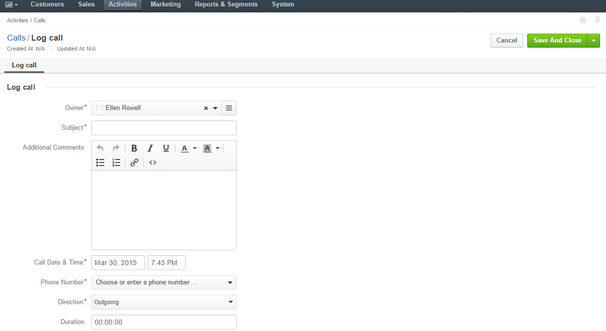
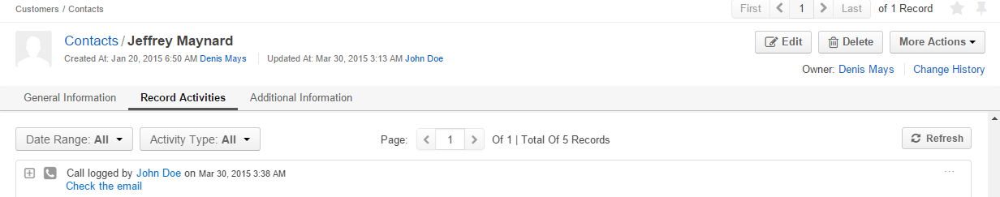

Log Call
Calls logging helps to keep a record of the outgoing and incoming calls.
There are two ways to log a call in OroCommerce:
- Log a call related to a record of an entity.
- Log a call from the “Calls” grid.
Log Call from the Calls Grid
- Go to Activities → Calls.
- Click the Log Call button.
- The “Log Call” form will appear.

The form has the same fields. By default, no phone number is defined.
View and Manage Calls
- All the calls can be viewed from the Calls grid.
- All the calls logged for a record are displayed and can be reached from the Record Activities section on the
View page:

From any of the grids above, you can manage the tasks using the action icons:
- Delete the call:
- Edit the logged call:
- View the logged call details: